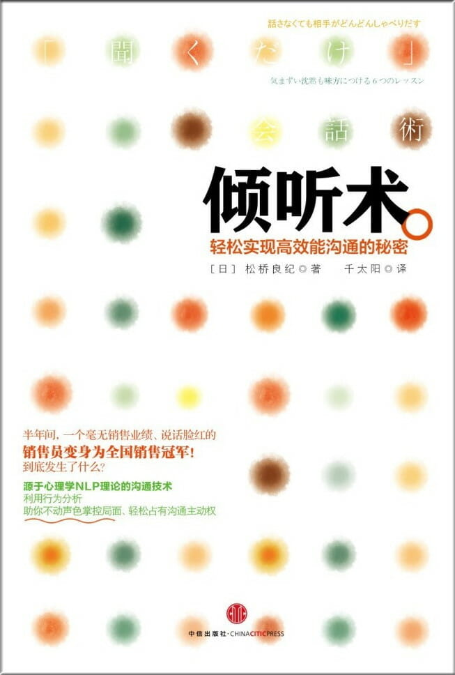

注：【】部分为笔者心得，非原文摘抄。
- 说得越多，越是无法与别人有效沟通。
- 对于沟通而言，滔滔不绝并不是必要条件，能得到对方的回应才是最重要的。
- 重要的是应该更加积极地思考，想象着美好明天的蓝图并继续为之奋斗。
- 不善于处理人际关系，所以说的话被人忽视也是理所当然的。
- 根据对方下巴的动作，调整自己的下巴。
- 销售员也好，陪酒女郎也罢，给人的第一印象尤其重要。
- 如果配合对方的动作，就可以建立彼此间的信任关系。
- 仅仅配合对方下巴的动作，对方就愿意开口说话。
- 成为一名让客户满意的职业咨询人员，其必要条件并不是一个劲儿地拼命说话，而是为了得到对方的认可，配合对方才是必要的。
- 如果能够很好地配合对方的肢体语言，和客户的关系就会发生质的变化。
- 最有效的技巧就是配合对方颈部的动作。
- “鹦鹉学舌”分为两种：语言的回溯和意义的回溯。不管是哪种回溯，都切忌加上自以为是的理解，你只需重复对方的语言，就能很好地引起对方的共鸣和理解。
- 在做一件事之前，总是想知道做了之后会发生什么，或者会有怎样的结果。这样做缺乏挑战精神和好奇心，也不能创造出新的东西。
- 复述说话者所说的部分内容，能给对方留下“他在认真听我说话，他理解我”的印象。
- 听别人重复自己的话时，自己很难察觉，而且说话会变得特别流畅。
- 最重要的是要了解对方。
- 年轻的时候，谁都为自己的梦想和目标努力奋斗过，但是人生又不可能完全按照原本设想的方向发展。于是很多人就在中途放弃了自己的梦想和目标，这样，他们的人生也变得一无是处。
- 作为了解对方的手段，“鹦鹉学舌”的效果特别显著。
- 人们喜欢跟自己类似的人在一起。
- 模仿对方动作，切忌照抄照搬。仔细观察对方的手部动作、姿势、重心和视线方向，最好将其进行微缩后再重复。
- 只有说与听并行，才能与他人进行完整的交流。
- 手势与眼神也要保持一致。
- 必杀技就是对方喝水或者喝茶的时候，自己也要喝。当然，酒也是一样的。
- 当客人一言不发的时候，不要硬和他们说话，而是若无其事地和他们看向同一方向。
- 观察对方的重心在哪里，然后去模仿。
- 要关心对方并仔细观察对方，这才是成为一名沟通达人的捷径。
- 事实上，我们不应该把沉默当作敌人，而应该把它当做朋友。等待 3 秒钟，给对方留点时间，是成为善于倾听的人的最为关键的一步。
- 注重实力的社会是有实力的人的天堂，没实力的人的地狱。
- 谁能将产品卖出去谁就是胜者。
- 一般情况下，人们在沉默的时候不全是在思考接下来该说些什么，特别是话少的人，他们把心里想说的话说出口是需要花很多时间的，在这期间就会保持沉默。如果这时候你去打破这种沉默的局面，那就相当于破坏了对方思考的时间。
- 人在作重要的决定或者做重要的事情之前都会保持沉默。
- 注意去配合对方说话的速度。
- 配合对方声音的高低和语调的话就会取得事半功倍的效果。
- 【别跟臭手下棋，手会越下越臭。】
- 执着于技巧而忘了真正重要的东西，就会进入危险地带。
- 当沟通顺利进行时，注意调节你的呼吸。
- 【如果感觉状态不好，不如放手一搏。】
- 有的人一旦有名，就会陷入傲慢自大的怪圈。
- 配合着对方的呼吸，调整自己的呼吸，使双方的呼吸同步。在做到这一点之前，最佳的选择就是耐心等待。
- 电话销售看不到对方的样子，所以语言和声音就成了成败的关键。
- 对方说话的时候 → 呼气；对方沉默的时候 → 吸气。
- 若不仔细观察对方并作出回应，那么无论是“听”还是“说”都会变得十分困难。
- 每个人都有自己的思考方式和价值观，沟通时对方能准确理解自己要表达的内容只是小概率事件，要善于将头脑中的意识和现实存在区分开来，尊重对方的价值观念，改变接受现实的方式。
- 对方将心里的话说给你听，如果你没有用真心回应对方，就会失去对方对你的信任。
- 如果你用真心倾听客人的每一句话，就不会有人投诉你了。
- 每个人都会站在自己的视角来认识现实中的事物，所以就算看到同样的东西、听到同样的话、感知到同样的事物，每个人的认识也会有所不同。
- 尊重对手的观点是交流的基本条件。
- 倾听的一方和说话的一方都要改变自己。只有这样，交流才能够不断深入。
- 【不时回访老顾客，是建立口碑营销的重要手段。】
- 人生没有失败，只有反馈。做出选择胜过什么都不选。
- 交流的意义在于观察对方的反应。
- 改变自己所需要的全部资源，全部都在自己身上。
- 你的所有行为都是由内心深处赞同这一行为的意识引发的，所有的行为都可能在某一特定情况下实现其价值。
- 任何人都有其价值，这个价值可以在任何时候发挥作用。价值没有好坏之分，只有是在好的计划中发挥作用还是在坏的计划中发挥作用的区别。
- 与其改变现实，不如改变接受现实的方式。
- 生活总是存在无数种可能。
- 对方的反应就是交流的成果。
- 无论你的语言多么流利，如果对方没有明白你想表达的意思，你的交流就是失败的。